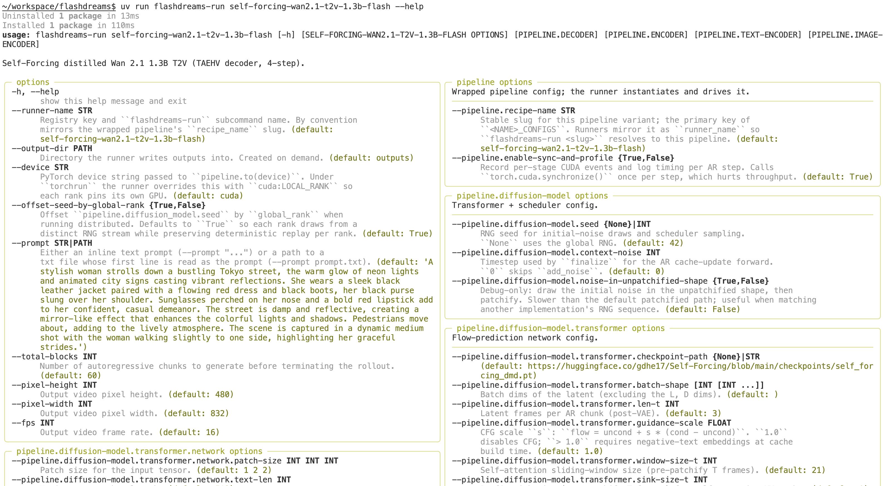

Config system¶
FlashDreams configuration is built around simple, strongly-typed Python dataclass objects.
This configuration system is similar to the one employed in nerfstudio. It allows you to easily plug in different permutations of model components and nest configurations to define the complete inference pipeline.
Base components¶
All configurable components in FlashDreams—such as the encoder, transformer, scheduler, and decoder—have a corresponding configuration dataclass and can be found under flashdreams.infra. As outlined in the Inference pipeline overview, the main entry point for defining an integration is the StreamInferencePipelineConfig.
These config objects are modular and nestable. A typical pipeline config defines the architecture by composing other config dataclasses:
from flashdreams.infra.diffusion.model import DiffusionModelConfig
from flashdreams.infra.diffusion.scheduler.fm import FlowMatchSchedulerConfig
from flashdreams.infra.pipeline import StreamInferencePipelineConfig
# Define your own configs for the encoder, transformer, and decoder.
MyStreamingEncoderConfig = ...
MyTransformerConfig = ...
MyStreamingDecoderConfig = ...
# Compose them into a pipeline config
pipeline_config = StreamInferencePipelineConfig(
name="customized-method-name",
encoder=MyStreamingEncoderConfig(),
diffusion_model=DiffusionModelConfig(
transformer=MyTransformerConfig(),
scheduler=FlowMatchSchedulerConfig(),
),
decoder=MyStreamingDecoderConfig(),
)
Creating new configs¶
If you are interested in creating a brand new model component, you will need to create a corresponding config with the associated parameters you want to expose.
Let’s say you want to create a new encoder called MyEncoder. You can create a new Encoder class that extends the base class. Before the model definition, you define the actual MyEncoderConfig which points to the MyEncoder class using the _target field.
from dataclasses import dataclass, field
from flashdreams.infra.encoder.base import EncoderConfig, Encoder
@dataclass(kw_only=True)
class MyEncoderConfig(EncoderConfig):
"""My custom encoder config."""
# Point to the class that will be instantiated by this config
_target: type["MyEncoder"] = field(default_factory=lambda: MyEncoder)
# Expose your configurable parameters
embedding_dim: int = 512
num_layers: int = 6
class MyEncoder(Encoder):
"""My custom encoder model.
Args:
config: Configuration to instantiate the encoder.
"""
# Enable type checking
config: MyEncoderConfig
def __init__(self, config: MyEncoderConfig) -> None:
super().__init__(config)
# Build your layers using self.config.embedding_dim, etc.
...
def forward(self, input):
...
Alternatively, you do not always have to write a complete configuration from scratch. You can use flashdreams.infra.config.derive_config() to create concise variants from existing configs. This allows you to inherit the base settings and only override the specific fields you want to change:
from flashdreams.infra.config import derive_config
from my_project.configs import MyBasePipelineConfig
# Create a variant that inherits everything from MyBasePipelineConfig
# but overrides the encoder's embedding dimension.
my_variant_config = derive_config(
MyBasePipelineConfig,
encoder=dict(embedding_dim=1024),
)
Modifying from CLI¶
Often times, you just want to play with the parameters of an existing model without having to specify a new one. You can easily do so via the CLI, which is powered by tyro.
Because our configurations are strongly typed dataclasses, tyro automatically generates a comprehensive command-line interface. You can use the flashdreams-run (The CLI carried in FlashDreams) command to dynamically override any nested dataclass field.
For example, to list out all existing configurable parameters for a model:
uv run flashdreams-run self-forcing-wan2.1-t2v-1.3b-taehv --help

To run the model with a modified configuration:
uv run flashdreams-run self-forcing-wan2.1-t2v-1.3b-taehv \
--pipeline.diffusion-model.transformer.use-cuda-graph True \
--total-blocks 7
For full details on the available commands, see the CLI reference. For end-to-end examples of defining custom pipeline configurations, see Add a new method.